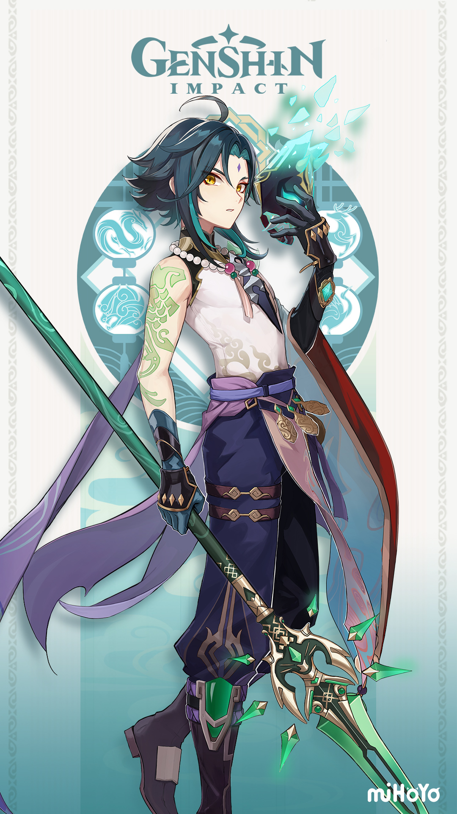

Xiao (Chinese: 魈 Xiāo) is a playable Anemo character in Genshin Impact.
He is an adeptus, under the name Alatus, and the sole surviving member of the five foremost Yakshas
dispatched by Morax
to subdue the demonic spirits that plagued Liyue.
He currently resides at Wangshu Inn and mostly restrains himself from large crowds and social interactions.
One of the mighty and illuminated adepti guarding Liyue, also heralded as the "Vigilant Yaksha."
Despite his youthful appearance, tales of his exploits have been documented for millennia.
He is especially fond of Wangshu Inn's Almond Tofu.
This is because it tastes just like the sweet dreams he used to devour.
| Artifacts | Effects | Recommended set for Xiao |
|---|---|---|
| Vermillion Hereafter | 2 piece bonus : Atk +18% 4 piece bonus : After using an Elemental Burst. this character will gain the Nascent Light effect, increasing their ATK by 8% for 16s. When the character's HP decreases, their ATK will further increase by 10%. This increase can occur this way maximum of 4 times. This effect can be triggered once every 0.8s. Nascent Light will be dispelled when the character leaves the field. If an Elemental Burst is used again during the duration of Nascent Light, the original Nascent Light will be dispelled |
2 piece bonus : Atk +18% 4 piece bonus : After using an Elemental Burst. this character will gain the Nascent Light effect, increasing their ATK by 8% for 16s. When the character's HP decreases, their ATK will further increase by 10%. This increase can occur this way maximum of 4 times. This effect can be triggered once every 0.8s. Nascent Light will be dispelled when the character leaves the field. If an Elemental Burst is used again during the duration of Nascent Light, the original Nascent Light will be dispelled |
| Shimenawa's Reminiscence | 2 piece bonus : Atk +18% 4 piece bonus : When casting an Elemental Skill, if the character has 15 or more Energy, they lose 15 Energy and Normal/Charged/Plunging Attack DMG is increased by 50% for 10s. This effect will not trigger again during that duration. |
2 piece bonus : Atk +18% |
| Gladiator's Finale | 2 piece bonus : Atk +18% 4 piece bonus : If the wielder of this artifact set uses a Sword, Claymore or Polearm, increases their Normal Attack DMG by 35%. |
|
| Echoes of an Offering | 2 piece bonus : Atk +18% 4 piece bonus : When Normal Attacks hit opponents, there is a 36% chance that it will trigger Valley Rite, which will increase Normal Attack DMG by 70% of ATK. This effect will be dispelled 0.05s after a Normal Attack deals DMG. If a Normal Attack fails to trigger Valley Rite, the odds of it triggering the next time will increase by 20%. This trigger can occur once every 0.2s. |
|
| Viridescent Venerer | 2 piece bonus : Anemo DMG Bonus +15% 4 piece bonus : Increases Swirl DMG by 60%. Decreases opponent's Elemental RES to the element infused in the Swirl by 40% for 10s. |
2 piece bonus : Anemo DMG Bonus +15% |
| Desert Pavilion Chronicle | 2 piece bonus : Anemo DMG Bonus +15% 4 piece bonus : When Charged Attacks hit opponents, the equipping character's Normal Attack SPD will increase by 10% while Normal, Charged, and Plunging Attack DMG will increase by 40% for 15s. |
If you still have anymore questions regarding Xiao, feel free to contact us through
this link
^-^
Or if you want to watch a comprehensive review of Genshin Characters including Xiao, we recommend checking Zy0x's channel
which you can visit by clicking the image